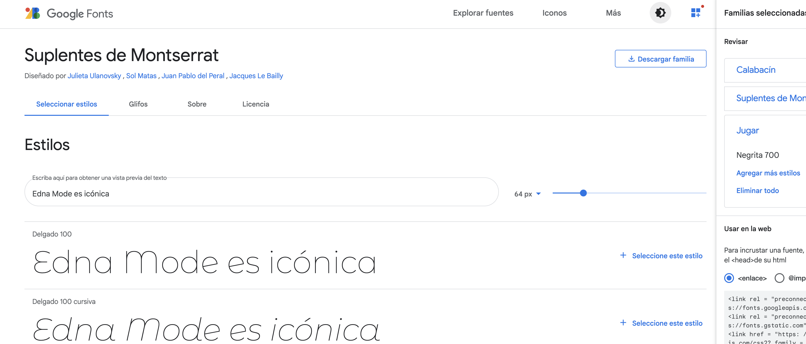

 Tipografía La fuente tipográfica es Montserrat Alternates diseñada por Julieta Ulanovsky, Sol Matas, Juan Pablo del Peral, Jacques Le Bailly Podés clickear aquí para ir a la fuente de Google o darle click, también, a la imagen de arriba.